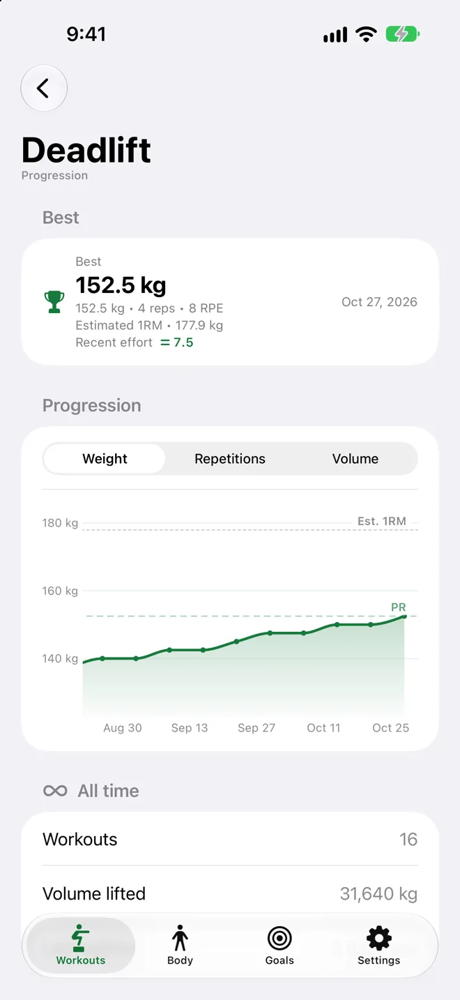
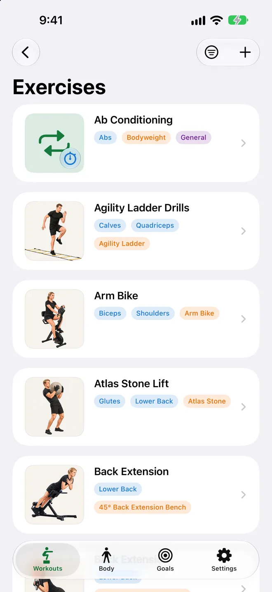
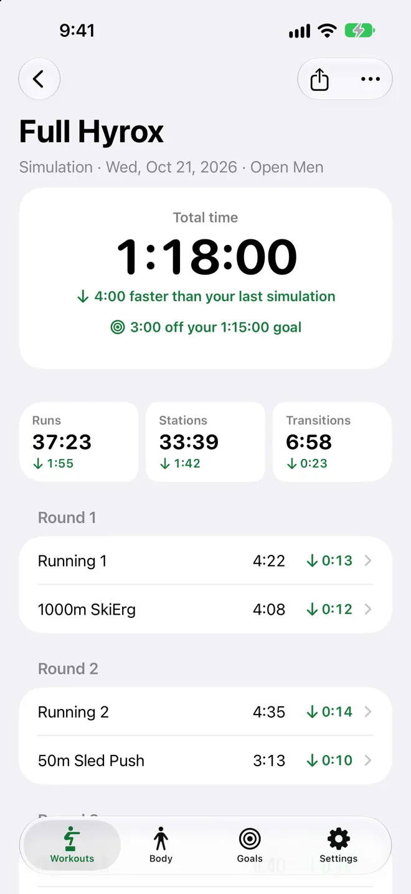

Train
Log a set and get back to the bar.
Start from a routine or go freeform. Sets, reps and weight go in as you train, and the first set is filled in from your last workout. Everything saves by itself.
Workout tracker for iPhone, iPad and Apple Watch
Tepuy tracks your training with unlimited routines, exercises, charts and body measurements. Strength, Hyrox, or whatever you train.
Free, with no account to create.

A tepuy is a table-top mountain in Venezuela: clean lines, a simple shape, nothing out of place. The app is built to be the same.
Train
Start from a routine or go freeform. Sets, reps and weight go in as you train, and the first set is filled in from your last workout. Everything saves by itself.

Progress
Progression charts and personal records for every exercise, volume trends, an activity heatmap, and weekly goals with streaks. Body weight and measurements get their own charts.

Any discipline
Each exercise carries what it needs: weight, reps, time, distance, RPE, heart rate. Strength training, powerlifting, calisthenics, kettlebells, Olympic lifting, or your own mix. Build your own or start from the library.

Hyrox
Race live with every split timed, or log a result afterwards. Each race gets its own screen with runs, stations, transitions and pacing, set against your previous one.

Apple Watch
Your Apple Watch runs the session: the current set, the rest countdown, your results. It records to Apple Health and keeps your iPhone in step.
I’ve lifted weights since I was a teenager, and I build Apple apps for a living. The popular trackers kept getting in my way: upsells on every screen, free tiers that aren’t, and one discipline per app. So I built the one I wanted, and I’m building it into a home for every discipline.
It’s free because it costs me almost nothing to run, and because fitness is expensive enough already: the gym, the clothes, maybe a trainer, the food. I grew up in Venezuela, where healthcare is out of reach for many people and staying fit is how they look after themselves. If a free app helps one of them, that’s a win for me.
Logging is free forever, with no caps and no trial. AI features will be paid when they arrive, because they cost money to run. Nothing that’s free today will be taken away, limited, or interrupted to sell them.